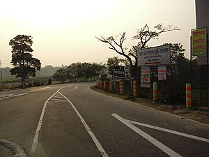
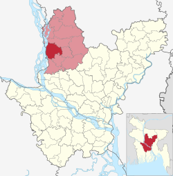

অবস্থান ও আয়তন
এই উপজেলার স্থানাঙ্ক ২৪.২৫০০° উত্তর ৮৯.৯১৬৭° পূর্ব। এর উত্তরে কালিহাতী উপজেলা, দক্ষিণে দেলদুয়ার উপজেলা ও নাগরপুর উপজেলা পূর্বে বাসাইল উপজেলা, পশ্চিমে সিরাজগঞ্জ জেলার সিরাজগঞ্জ জেলার বেলকুচি উপজেলা ও চৌহালি উপজেলা অবস্থিত।
প্রশাসন
টাঙ্গাইল জেলার প্রধান পৌর এলাকা টাঙ্গাইল শহর এই উপজেলার অন্তর্গত। এই উপজেলা ১২ টি ইউনিয়ন নিয়ে গঠিত। ইউনিয়ন গুলো হলো - করটিয়া ইউনিয়ন, ঘারিন্দা ইউনিয়ন, গালা ইউনিয়ন, পোড়াবাড়ী ইউনিয়ন, সিলিমপুর ইউনিয়ন , কাকুয়া ইউনিয়ন, কাতুলী ইউনিয়ন,মগড়া ইউনিয়ন , মাহামুদনগর ইউনিয়ন, হুগড়া ইউনিয়ন, দাইন্যা ইউনিয়ন ,বাঘিল ইউনিয়ন.
উল্লেখযোগ্য ব্যক্তিত্ব
- মৌলবী মোহাম্মদ নঈমুদ্দীন - বাঙালি মুসলমানদের মধ্যে সর্বপ্রথম কোরআনের বাংলা অনুবাদকারী।
- এস এম নজরুল ইসলাম, ওয়ালটন এবং মার্সেল কোম্পানির প্রতিষ্ঠাতা।
টাঙ্গাইল সদর উপজেলা
টাঙ্গাইল সদর উপজেলার অবস্থান
মানচিত্রে টাঙ্গাইল সদর উপজেলা
স্থানাঙ্কঃ
২৪°১৪′৪৯″ উত্তর ৮৯°৫৪′৫১″
দেশঃ
বাংলাদেশ
বিভাগঃ
ঢাকা বিভাগ
জেলাঃ
টাঙ্গাইল জেলা
আয়তনঃ
মোটঃ৩৩৪.২৬ বর্গকিমি
জনসংখ্যাঃ
মোটঃ
৯,৮১,০০০
জনঘনত্বঃ
২,৯০০/বর্গকিমি
সাক্ষরতার হারঃ:
৫৩.৮০%
সময় অঞ্চলঃ
বিএসটি (ইউটিসি+৬)
বিভাগের কোডঃ
৩০ ৯৩ ৯৫